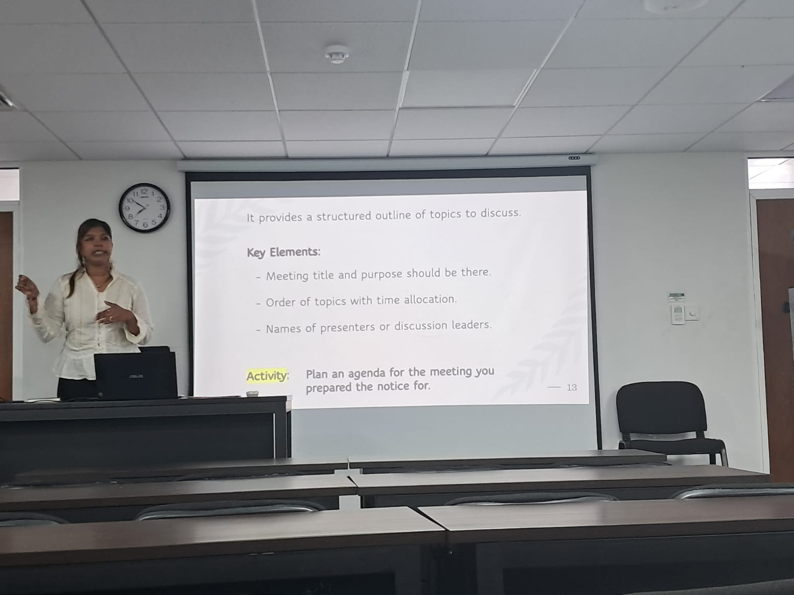
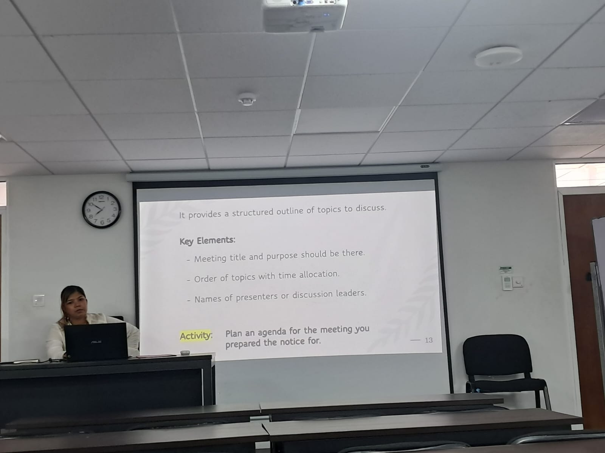

PROFESSIONAL SKILLS / SESSION 04
Facilitating and Conducting Meetings
Organizing and communicating in professional meetings.
Overview
Organizing and communicating in professional meetings.
Learning outcomes
- Prepare meeting agendas.
- Write meeting minutes.
- Communicate effectively during discussions.
Activities
Meeting agendas, meeting minutes, and professional discussions.
My reflection
This session introduced the proper procedures for organizing professional meetings. I learned how to prepare meeting agendas, write meeting minutes, and communicate effectively during discussions. These skills will be valuable when organizing university group projects and workplace meetings.
Moments from the meetings session




